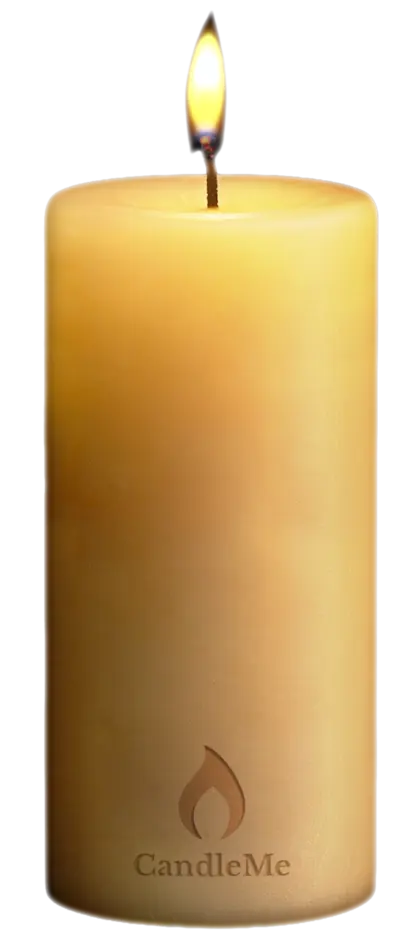

Wash again.
Your wash booking page, membership page, or service menu. Whatever you use today stays.
For independent car washes and multi-location operators
CandleMe gives every customer a branded digital Candle they can save, revisit, and share. Keep memberships, wash plans, detailing, offers, referrals, reviews, and service recovery one tap away after the car leaves.
Customers save your Candle directly to Apple Wallet or Google Wallet in seconds.
No form. No account. No login. No personal information required.

The wash is over. The customer liked the experience. They may even want to come back. But the usual path asks for too much first: download an app, create an account, enter an email or phone number, remember a password, accept marketing, and find the program again later.
CandleMe starts before registration. A customer scans your Candle, opens it, and saves it directly to Apple Wallet or Google Wallet. No separate app. No account. No login. No email address or phone number required. The next wash, membership, detailing service, offer, referral, fundraiser, or service-recovery link is already waiting where they keep useful things.
Most loyalty programs ask customers to join first. CandleMe gives them something useful first.
No download. No registration. No identification. Just a simple way back to you.
You choose what goes inside. Most car washes start with these four.
Your wash booking page, membership page, or service menu. Whatever you use today stays.
Your unlimited wash plan, membership enrollment, or package options. Change them any time.
Give customers a direct path to the cause, school, team, or community program your wash already supports.
Give customers a reason to share, return, refer a friend, or claim a timely offer.
No app to download. No account to create. Customers scan, save, and they’re done.
Your car wash, easier to return to. Easier to return to.
A shortcut back to a page. Easy to forget among a hundred others. Ends at the click.

A Candle they keep in their Wallet. Opens to everything you chose. Passes the connection on to someone new.
One QR works from a manager’s phone or printed card.
Every participating crew member can introduce the right Candle for the business and location.
Private by design.
Contact details are used only for onboarding and recovery. They never appear on a Candle, reach clients, or get used for marketing.
Activations, saves, returns, shares, and new customers by location and channel.
See which locations and crew members are generating the strongest response.
See which destinations get used, which Candles are shared, and where customers return. Export any time.
Measure activation, saving, sharing, memberships, referrals, service recovery, and performance by location.
To explore every view, open Your CandleMe Dashboard from the header or footer.
Favorable pilot terms
All four destination groups are open during the pilot at no extra cost.
Activation: the first intentional open from a Candle’s QR code or link.
Included in your pilot
Send the essentials.
Location name, address, and manager email.
Use what you already have.
Upload a file, share your locations page, or type them in.
We prepare everything.
We build the location list and organize the setup.
You confirm.
Nothing is created until you approve it.
See plans and pricing before you begin. The pricing page opens separately, and this page will still be here when you return.
No. They scan, save the Candle to Apple Wallet or Google Wallet, and that’s it. Double-tapping the CandleMe symbol brings them straight back to your wash.
No. CandleMe connects customers to the systems and links you already use. Memberships, wash plans, detailing, reviews, referrals, offers, and service recovery can all sit together inside one Candle in the customer’s Wallet.
Yes. Each location can be configured and measured separately while the network remains under your control.
Use the touchpoints you already have: pay booth, tunnel screen, app, receipt, digital display, event booth, printed card, SMS, or email.
Very little. Crew members can point customers to the Candle or use the approved placement. CandleMe tracks the response by location, channel, and crew member when configured.
A customer scans or opens the Candle from a pay booth, tunnel screen, receipt, app, printed placement, event, SMS, email, or crew interaction.
Wallets are far less crowded than browsers, messages, or social feeds. Marqeta research found that 61% of mobile-wallet users kept only one or two payment cards, so a distinctive Candle can remain among a small number of useful items. Read the research summary.
The standard monthly rate for your plan, per location. Each plan includes a set number of activations a month, and additional activations are billed at your plan’s rate. Full details are on the pricing page.
Yes. Update any destination from your dashboard and customers see the change the next time they open their Candle.
Yes. CandleMe does not operate the fundraising program. You can connect the Candle directly to the cause, school, team, or community program you already support.
Later, yes. Selected destinations can host relevant partners or sponsors. Ask about sponsorship and fleet opportunities once your pilot has real customer numbers.
One setup. A branded Candle customers can keep, revisit, and share.